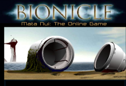
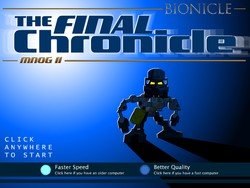
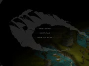
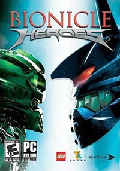
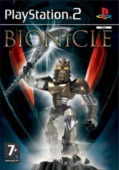

Games were one of the major method of worldbuilding in BIONICLE. Here are the ones of most importance in order of release.
Admittedly, the best and most influential BIONICLE related video game by far, MNOGI was released in 2001 to promote the first wave of BIONICLE toys. It served as the primary source of worldbuilding for a short time as it predated the first comics and movies. In essence, it was a simple point-and-click adventure game where the player could travel and explore the island of Mata Nui. However, the rich atmosphere and eerie score made it much more, something you have to experience for yourself. Currently the game can be found here.

MNOGII was the sequel to MNOGI and, like it's predecessor, took place on the island of Mata Nui. But unlike MNOGI, its sequel was filled with glitches and was hardly even playable. Fortunately, this has been fixed by the BioMedia Project group and the game can currently be played from their website.

BIONICLE has had it's fair share of miscellaneous games from simple flash games to third person shooters. It should be noted that these do not contribute to the storytelling or worldbuilding aspect and should be viewed as uncanon. Most notable ones would be Voya Nui Online Game, Bionicle Heroes and BIONICLE: The Game.
  